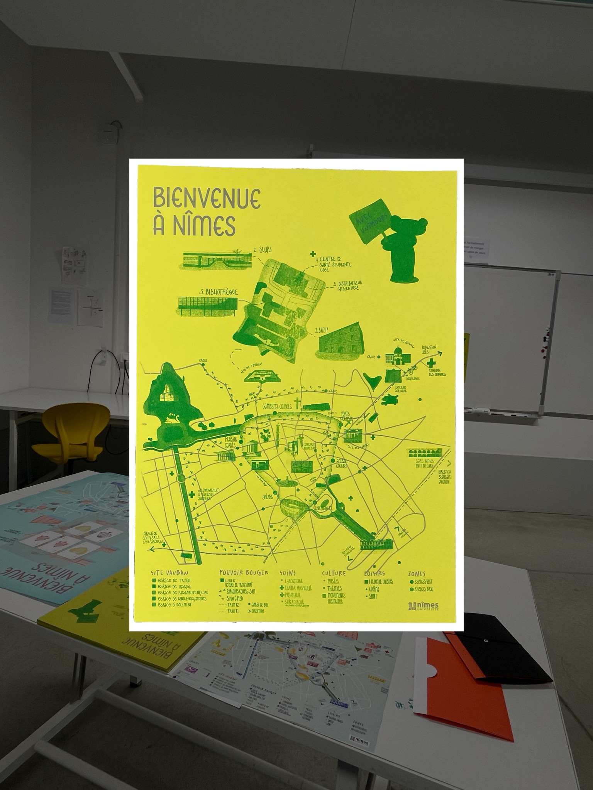
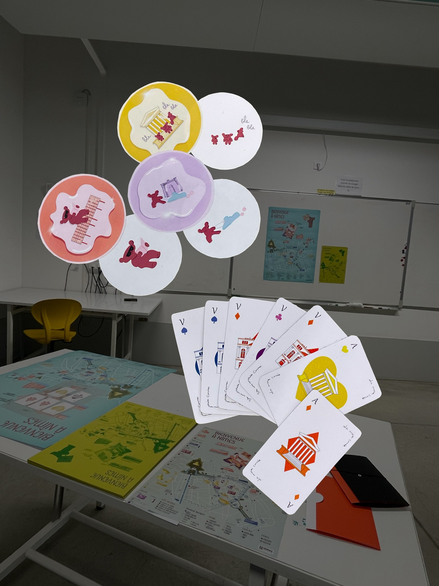

Design social
Bienvenue
à Nîmes
On nous a demandé de rendre les goodies de l’Unîmes plus éco-responsables. Notre réponse : repenser leur utilité plutôt que produire un objet promotionnel de plus.

Questionner le besoin
Au-delà
du matériau.
La problématique de départ : « rendre les goodies plus éco-responsables ».
Le même tote bag en coton bio, le même stylo en bois : changer uniquement le matériau ne suffisait pas à répondre à notre question. Cela reste un objet à produire, à stocker, puis à jeter.
Pour éviter une réponse de façade, nous avons choisi de revenir au besoin : a-t-on vraiment besoin d’un objet supplémentaire ?
Notre réponse
Du service,
pas du plastique.
Nous avons proposé de remplacer le goodie par un service graphique utile aux étudiantes et aux étudiants.
Une cartographie de l’université et de la ville, à la fois décoration de chambre et compagnon du quotidien : où manger à petit prix, où réviser au calme, où trouver de l’aide.
Un ensemble de supports complémentaires
- Un flyer pour expliquer la démarche.
- Un jeu de cartes pour découvrir les lieux.
- Des stickers pour se réapproprier sa carte.
Sans plastique et imprimés localement, ces supports sont conçus pour être gardés parce qu’ils rendent un service concret.


La démarche
Repenser
le support.
L’éco-responsabilité en graphisme ne se limite pas à imprimer sur du papier recyclé. Elle commence par une réflexion sur le support lui-même, sa fonction et la place qu’il prend dans le quotidien.
Ce projet défend un graphisme que l’on conserve pour ce qu’il permet de faire.